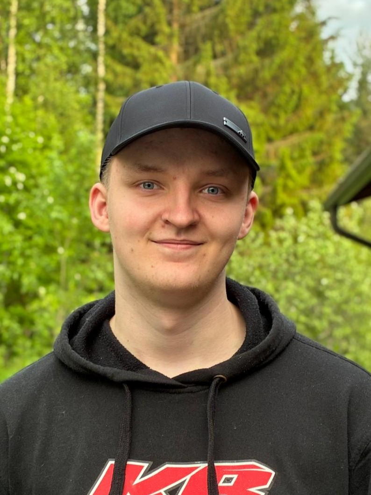

Vaikka olen itse nuori niin, taustalta löytyy yli viiden vuoden kokemus hautakivi hommista. Iskän mukana hautausmailla on tullut vietettyä paljon aikaa, ja matkan varrella ovat tarttuneet mukaan niin yleiset taidot, kuin parhaat kikat. Käytännön osaamista on kertynyt reilusti, ja työni teen aina huolellisesti ja kunnioituksella.
Tavoitteena on tarjota sellaista palvelua ja työnjälkeä, josta asiakas voi hyvillä mielin suositella tutulle tai miksei vaikka naapurillekin.
Toimin pääasiassa Hankasalmella ja sen lähialueilla, kuten Lievestuoreella, Pieksämäellä ja Konnevedellä ja toki muuallakin lähiseudulla tarpeen mukaan. Tällä hetkellä minulta onnistuu oikaisut, pesut, sekä mustien ja hopeatekstien maalaaminen. Kultaukseen ei vielä löydy tarpeita.